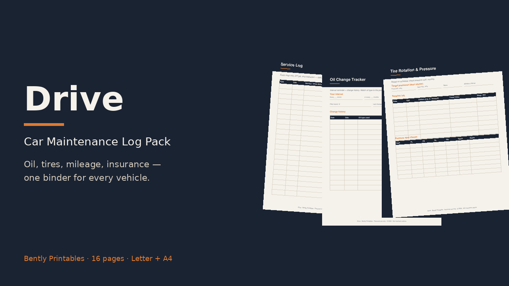

16 printable pages, Letter + A4
- Vehicle profile (VIN, oil type, tire size, battery)
- Service log · oil change tracker · tire rotation & pressure
- Insurance & registration notes · mileage log · expense tracker
- Roadside emergency kit + seasonal / pre-trip checklists
- Parts, fluids & filter log + 3 blank masters
Start free
Download the service log page, then grab the full pack.
For personal record-keeping only. Not mechanic advice — follow your manufacturer's schedule and a licensed technician.